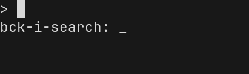
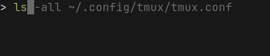
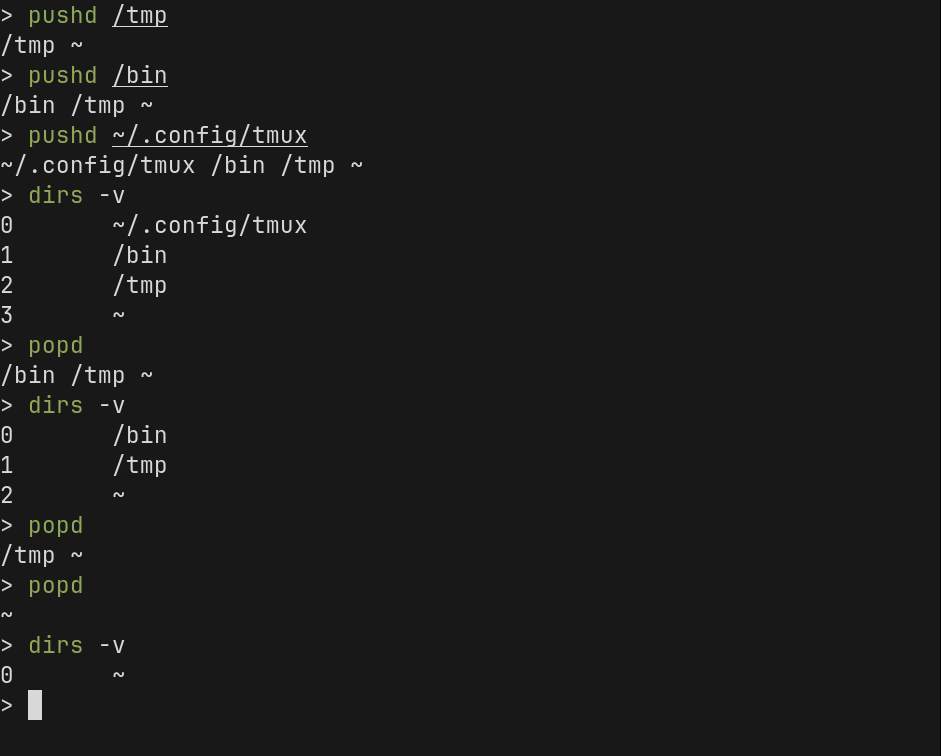

Finding Help (and Some Misc. Tips)
Finding Help
There are a lot of commands, and every command has options and required parameters. The commands you use every day will become muscle-memory, but you will always need to look things up to find help or remember the options you need to use.
man - The Manual Pages
The first place you should look is the manual pages. Most commands have manual pages that tell you all about the command, how it works, what are the parameters and options, known bugs, and often times they will have examples of how to use them.
To view the help for the ls command:
man ls

You can move up and down in the document using the arrow keys (↓/↑) or vim keys j/k.
You can move down by one page with space.
You can search through the document by typing / and then entering your search term. For example, if you want to search to see what the -X option does, you would type /-X.
When you want to quit, press q.
Press h to view the help menu to see all the commands you can use.
Try it Out
What does the -t in ls -t do?
What does the -S3 in the following command mean?
man -S3 printf
Command Help
If you know how to use the command but you need a quick reference, use the command’s help option.
By convention, most commands and programs should have a help menu. You can usually see this by typing the command with either -h or --help as the parameter.
ssh --help
Not every command has a help menu, but most do.
Using zsh Autocomplete
If you completed the zsh configuration module, then you should have enabled and configured autocompletion.
If you already know the command but just can’t remember the arguments or commands, you can often use this to just <tab> complete your way to typing out the command.

Using your History
When you use the shell every day, most commands you need are already in your history. There are a few tricks you can use that will allow you to quickly retrieve specific commands from your history.
You can also rely on your history as a log of the sequence of commands you used to accomplish a task, that you need to repeat over and over.
Reverse-Incremental Search
The first time I saw someone using this feature, I thought they must be a wizard. They were entering commands so fast, and using far fewer keystrokes than you’d need to type them all out.
But it’s not really magic, he was just (very efficiently) searching through his history and entering commands that he had already previously run.
To use this feature, press Ctrl+r at the prompt.

Now if you start typing, it will keep updating the command line with the best match, searching backwards through your history, for entries that contain your search term as a substring.

You can keep typing to refine your command, or you can use Ctrl+r and Ctrl+Shift+r to move forward and backwards through the other matches for your prompt.
If you want to run the command, hit Enter/Return.
If you want to cancel, hit Ctrl+c.
If you want to edit the current selection before running it, use the left or right arrow keys to move around.
Try it Out
TODO
zsh Plugins
zsh-history-substring-search
The zsh-history-substring-search plugin works like Ctrl-r but is a little more beginner friendly for most people.
To use it, just type any substring/part of the command you want to summon from the history, and then press the “up” arrow (↑).
If you want to cycle through more matches, you can cycle to the next match by pressing ↑ again, and you can go back with the “down” arrow (↓).
This is less powerful than Ctrl-r because, once you hit the arrow key, you can’t continue typing to further refine your search. You have to cycle up/down, one entry at a time, based on the search string you already entered.
zsh-autosuggestions
The zsh-autosuggestions plugin will show an in-line “autocomplete” placeholder, with the most recent command from your history that would complete what you have typed so far:

If you want to accept the suggestion, use the right arrow key (→).
Replaying Sequences of Commands
I’m not sure if everyone would consider this good advice, but it’s sometimes very convenient to just repeat a series of steps by cycling up through your command history by a fixed number of entries, and re-running each one in sequence.
For example, if you had to repeat this operation, over and over, to test your code:
- Export your
mysqldatabase usingmysqldumpand save it to/tmp - Run a script to bootstrap a new copy of your database.
- Run a script or command to populate the database according to some test criteria.
- Export the
mysqldatabase again, to a second location. diffthe two database dumps.
A sequence of 5 commands, which you can repeat over and over without changing them.
After you finish running the sequence, and you want to repeat it, just hit the “up” arrow (↑) 5 times to retrieve the command for step one.
Once you run that command, it will now be at the bottom of your history list, which means that now step two is 5 commands back in your history. Press ↑ five more times and run it. Repeat until you’ve completed the sequence, hitting ↑ 5 times each time to run the next command.
This is convenient, and I do it all the time, but it may not be ideal:
- If you enter something in between commands, you can throw off the ‘5x’ offset and mess up your sequence very easily.
- You might start moving too quickly and run the wrong commands out of sequence.
- Your history file might get truncated and you lose this history.
Once you’ve done this a few times, you should probably create a script instead.
Using pushd/popd
Sometimes you may need to temporarily change to a different directory and run a few commands, but you don’t want to lose your spot. If you use pushd and popd, you can save your place in a “stack” of directory bookmarks and then return to them when you are done.
Use pushd to move to a new directory and save your place on the dirs stack. Try the following sequence of commands:
Try it Out section
cd ~
pushd /tmp
touch test.txt
dirs -v
popd

You can put something in your prompt string to show how many levels of directories are on the stack:
$(dirs -v | wc -l | xargs)
Entering Multiple Commands at Once
You can enter multiple commands at once using the ; (semi-colon) character to separate commands:
cd /tmp ; ls
This would change directory to /tmp and immediately print out it’s contents.
If you want to run a command ONLY if the previous command succeeded, you can use &&:
find . -name '*.txt' && echo "FOUND TEXT FILES"
If any text file were found under the current directory, then print the text “FOUND TEXT FILES”. If no matches were found, then the second command will not be executed.
You can also use || to “or” two commands together: run the second command if the first command fails:
find . -name '*.txt' || echo "NO TEXT FILES!"
Similar to the previous example, this would print “NO TEXT FILES!” if the find command failed to find any text files.
These conditions are based on the exit code of the previous command. If a command succeeds, then it returns an exit code of 0, to mean no errors. If the command fails, then it returns a non-zero value to indicate the error.
This means that TRUE=0 and FALSE=(not 0). This is important to keep in mind, but it won’t affect you when you are simply combining two commands because the logical && and || operators hide the details and you can just focus on the high-level logic.